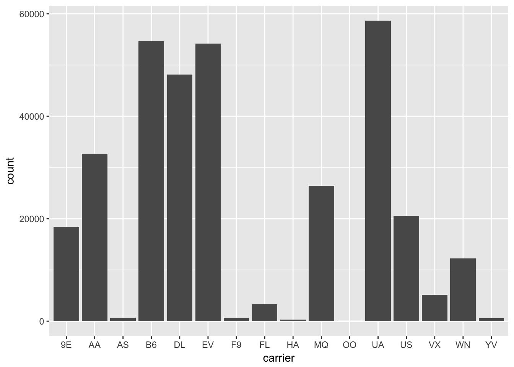
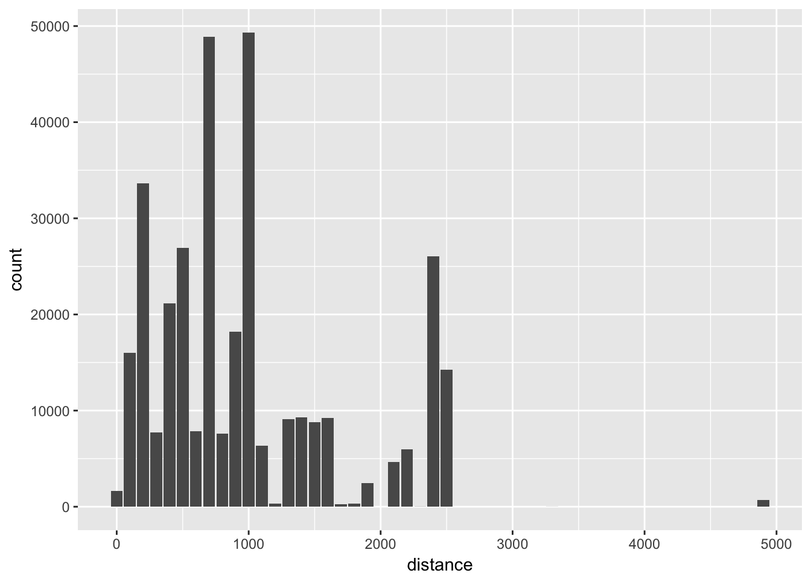

Chapter 6 Calculation
MongoDB has two methods for performing in-database calculations: aggregation pipelines and mapreduce. The aggregation pipeline system provides better performance and more coherent interface. However, map-reduce operations provide some flexibility that is not presently available in the aggregation pipeline.
6.1 Aggregate
The aggregate() method allows you to run an aggregation pipeline. For example the pipeline below calculates the total flights per carrier and the average distance:
stats <- flt$aggregate(
'[{"$group":{"_id":"$carrier", "count": {"$sum":1}, "average":{"$avg":"$distance"}}}]',
options = '{"allowDiskUse":true}'
)
names(stats) <- c("carrier", "count", "average")
print(stats)#> carrier count average
#> 1 OO 64 500.8125
#> 2 F9 1370 1620.0000
#> 3 YV 1202 375.0333
#> 4 EV 108346 562.9917
#> 5 FL 6520 664.8294
#> 6 9E 36920 530.2358
#> 7 AS 1428 2402.0000
#> 8 US 41072 553.4563
#> 9 MQ 52794 569.5327
#> 10 UA 117330 1529.1149
#> 11 DL 96220 1236.9012
#> 12 B6 109270 1068.6215
#> 13 VX 10324 2499.4822
#> 14 WN 24550 996.2691
#> 15 HA 684 4983.0000
#> 16 AA 65458 1340.2360Let’s make a pretty plot:

Check the MongoDB manual for detailed description of the pipeline syntax and supported options.
6.2 Map/Reduce
The mapreduce() method allow for running a custom in-database mapreduce job by providing custom map and reduce JavaScript functions. Running JavaScript is slower using the aggregate system, but you can implement fully customized database operations.
Below is a simple example to do “binning” of distances to create a histogram.
# Map-reduce (binning)
histdata <- flt$mapreduce(
map = "function(){emit(Math.floor(this.distance/100)*100, 1)}",
reduce = "function(id, counts){return Array.sum(counts)}"
)
names(histdata) <- c("distance", "count")
print(histdata)#> distance count
#> 1 0 3266
#> 2 100 32034
#> 3 200 67274
#> 4 300 15496
#> 5 400 42364
#> 6 500 53850
#> 7 600 15692
#> 8 700 97808
#> 9 800 15148
#> 10 900 36410
#> 11 1000 98654
#> 12 1100 12672
#> 13 1200 664
#> 14 1300 18168
#> 15 1400 18626
#> 16 1500 17546
#> 17 1600 18440
#> 18 1700 486
#> 19 1800 630
#> 20 1900 4934
#> 21 2100 9312
#> 22 2200 11994
#> 23 2300 38
#> 24 2400 52104
#> 25 2500 28512
#> 26 3300 16
#> 27 4900 1414From this data we can create a pretty histogram:

Obviously we could have done binning in R instead, however if we are dealing with loads of data, doing it in database can be much more efficient.